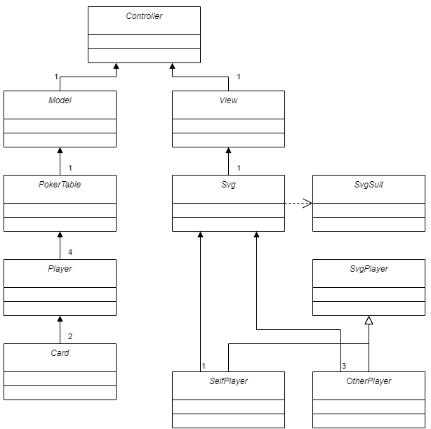
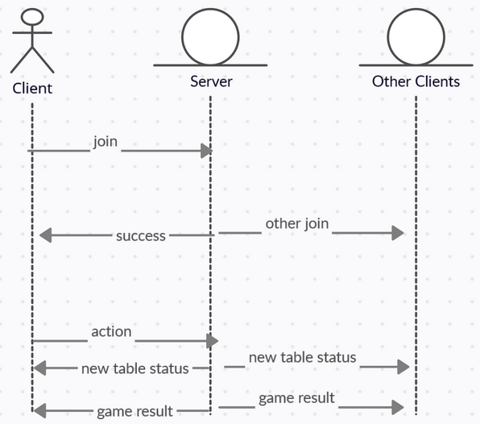
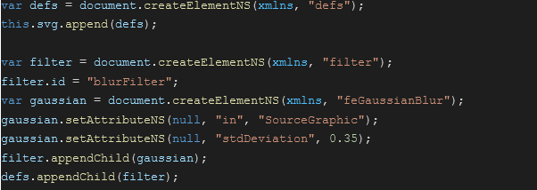
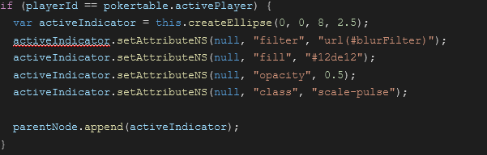
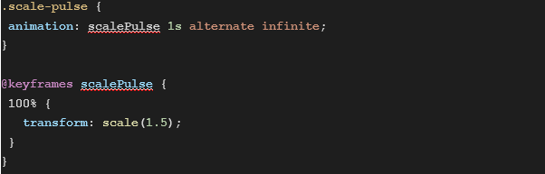
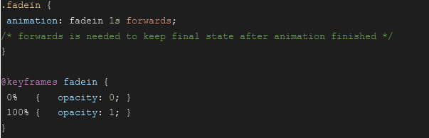
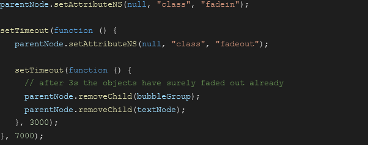
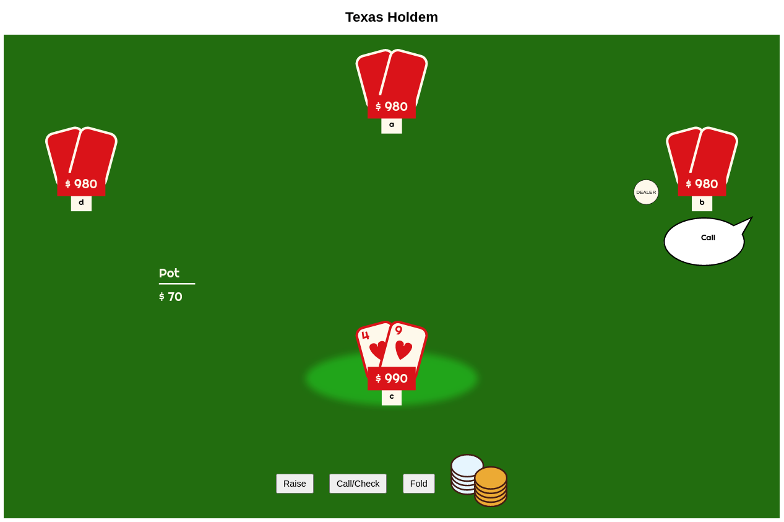

Texas Hold'em by Group 18
Official Documentation
Table of Contents
IdeaUsed Technologies
Model-View-Controller
Client - Server Communication
Server Logic
Client
Source Code
Lessons Learned
Limitations
Idea
- Texas Hold’em poker game
- Networked multiplayer
- Up to 4 players
- Virtual poker table
- Drag & drop your chips go all in!
- Animations
- Result overlay after the round
- History of past game results
Used technologies
Following are the technologies we used to implement the web application.
- SVG
- Drag&Drop
- Local Storage
- Websockets
- HTML form features
- JSON
- NodeJS (Backend)
Client-Side Model-View-Controller
As you can see in the class diagram, our client architecture follows the MVC pattern strictly. We have a "Controller" that is responsible for the communication to the server. The "Controller" stores the data from the server using the "Model" and visualizes it using the "View".
The "Model" represents the data that is necessary for a game of poker. We implemented it using a "PokerTable" class that represents the current game status. This status includes the pot, dealer, blinds, and more. The "Player" objects are also placed in the "PokerTable", and our "PokerTable" has four players. As you know, in poker, each of the Players has two cards during the round.
On the side of the "View", we used SVG. Our Svg class uses SvSuit to display the suits of the cards. The Svg class has one SelfPlayer object and three OtherPlayer objects. Both SelfPlayer and OtherPlayer are inherited from SvgPlayer.
Messaging between server and client via WebSockets
Static assets (Javascript, HTML, CSS) are initially loaded via GET requests from the server. After initial loading, all communication is done via websockets. On Client side, websocket communication is handled with pure Javascript code. Server side, the npm package “ws” is used for easier handling.
The client first sends a “join” request to the server, including the chosen nickname. If joining was successful on the server side(valid username given and table is not full yet) a ‘success’ message is sent back to the client. All other clients receive a ‘otherJoin’ message to inform them of the new player. From now on, all game actions are sent via ‘action’ messages from the client. The server in return sends a ‘tablestatus’ message to all clients, with the updated game status. When the game is finished, the server sends a ‘gameResult’ message to all clients, informing them of the winner and ending the game.
All message payloads are sent in JSON format.
Server logic
The server handles all of the logic that is needed for playing the game. Everything game related is stored in a PokerTable object as well as in some other support classes. The server receives a message from the client with a msg.type and invokes functions from the PokerTable class. The Clients are stored as Player objects.
At the start of each round a deck of cards is generated, cards are dealt randomly and stored in either the Player objects or member variables of the Pokertable. After that the whole Pokertable is set up with starting bets dealer button positions and options for the player. After that the server waits for the player to perform an action which is then sent to the server via a message with the type ‘action’. That message contains the option the player chose. It can be one of the four: raise, call, allin or fold.
The server then handles the option chosen by the player by adjusting all the necessary variables. Then a message with the updated Pokertable is sent to all players. If the last round is reached or all players are out of options the winner is determined. For this we used an open source tool called pokersolver1.
When a round is resolved the Pokertable is reset and a new round is started and a delayed message is sent to all players.
Client
In this section, we present the tasks that our client accomplishes. We decided to implement the game logic on the server. Therefore, our client is more focused on communication with the server (see "Messaging between server and client via WebSockets"), storing the game status, visualizing the game status (see "SVG/View"), interacting with the user, and sending game actions to the server, and storing game statistics. Here we want to take a quick look at the latter two.
Our client is responsible for visualizing the current game status but also to take input from the user and send it to the server. In the case of a poker game, there are the options "Raise", "Check/Call", "Fold" and "All In". Depending on the current game status, the client only allows the currently possible actions to be taken by the user. We implemented this by sending all possible actions to the client and enabling/disabling the respective buttons. For the "Raise" action, we always doubled the current highest bet; there is no option to input an amount here. Going "All In" is always possible, as long as you are still in the game and did not yet fold. To make use of Drag&Drop, we added an image of chips that can be dragged on the poker table. Should a player do this, all his money goes into the pot.
Another feature that we implemented on the client is game statistics. To realize this, we use the localStorage in the browser. What we store are two values, the total number of played games and the games that were won. From this, we calculate the number of lost games and the win ratio. We show the player these four values (total games, games lost, games won, win ratio) when he clicks on the button "Statistics" on the join screen.
SVG/View
SVG instead of Canvas (Styling with CSS, Responsiveness, not so many objects) Though we planned using Canvas, we decided to use SVG instead, because this way the drawing of the objects and the styling of them can be separated nicely between JS and CSS. Also SVG better supports responsiveness.
A disadvantage of SVG is its performance, however since we only had a few objects to draw (limited number of cards/players, buttons, etc.) and also the frequency of the re-draws was going to be rather low, the performance wasn’t that big of a factor.
Reuse of elements
SVG also allows for defining elements that can be referenced later, e.g. a gaussian blur filter was created once at the start of the SVG, and then can be referenced from anywhere within the SVG by referencing its ID #blurFilter.
A similar approach that we employed was making use of the <use > element to reference objects that can be used multiple times from anywhere in the document. The elements representing the card values are a good example, because those have a good chance to appear multiple times in the document.
Animations
The cool thing about SVG is that it can be animated with pure CSS. We used this approach to animate the following elements and actions:
Active Player
In the JS an SVG Ellipse is created and the CSS class ‘scale-pulse’ is applied to it. Also a gaussian blur filter was applied so that the ellipse’s border appears a little smoother. The filter was created earlier and is just referenced here.
The CSS class states the keyframed animation that should be used.
Speech bubbles & Dealing Cards
Speech bubbles and cards have been animated by applying a CSS class with a keyframed animation that changes the elements opacity, to fade the element in or out respectively.
On the JS side, the fadein and fadeout classes have been applied as follows for the speech bubbles:
A timeout was set to have the bubble shown for a certain amount of time after fading it out again. After the node has faded out it is also removed from the document again.

Screenshot of the app. Not the ellipse indicating the active player and the speech bubble showing the most recent action of a player. These elements were created as described earlier.
Source Code
The source code is hosted on Github.com:
https://github.com/matfriedrich/holdemThe code was documented using JSDoc
Source Code DocumentationLessons Learned
All in all, the project went very well. We did not have any notable problems. Of course, there are always things you know better afterwards:
Assign websocket connection to the player to avoid vulnerability because all cards are sent over the network to all players.
Using existing solutions for recurring problems (PokerSolver) saves a lot of time.
setTimeout() is tricky to handle and can interfere with Websocket communication timings.
There’s no real z-index in SVG, this means the elements that appear later in the document lie on top of elements that were defined earlier in the document and this can not be changed. Therefore, the layout of the SVG document should be considered thoroughly upfront.
Limitations
To keep the scope of the project reasonable, we had to make some compromises which limit our application with regards to "real world usability":
- 4 Player Limit: The game can only be player by exactly 4 players, no less and no more. This would be an easy fix, but was planed like this from the beginning.
- Easy to cheat: In our implementation, the server sends the complete game state to all players. This means, that each player will receive information about the hands of the other players. This is very obviously an easy opportunity for cheating. We developed the app under the assumption of only having honest players(us 4).
- Only one Table: The server state allows for exactly one table/game to be open at a time.